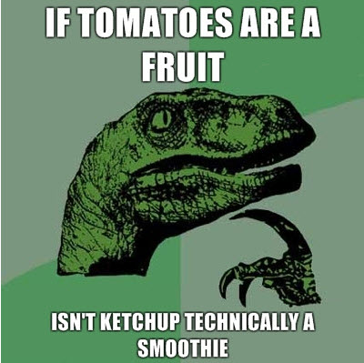

9GAG - Tomato Smoothie

“If tomatoes are a fruit, isn't ketchup technically a smoothie?”
Sometimes I like to dip my french fries in a chocolate shake, but usually, it now appears I like to dip them in a tomato smoothie.
Previously: f8 Conference | Bernard Barry Next: The Making of Raven's Wing - Coudal Partners